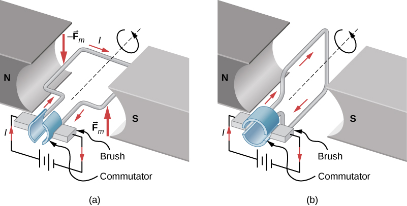

Сила Ампера#
Розміщення рамки зі струмом між полюсами магнітів викликає цікаве явище - вона обертається і фіксується в положенні, перпендикулярному до силових ліній магнітного поля. Виникає питання: чи можливо забезпечити безперервне обертання такої рамки? Яким чином був створений електричний двигун, який з'явився значно раніше двигуна внутрішнього згоряння? Як магнітне поле діє на контур зі струмом? Розглянемо ці питання детальніше.
Сила Ампера#
Восени 1820 року французький фізик А. Ампер під час дослідження впливу магнітного поля на провідники різноманітних конфігурацій вивів математичне співвідношення для обчислення сили, що діє на малу ділянку провідника зі струмом. Сьогодні цю силу фізики називають силою Ампера.
Сила Ампера визначається як сила взаємодії магнітного поля з провідником, через який проходить електричний струм.
Для прямолінійного провідника, розміщеного в однорідному магнітному полі, величина сили Ампера розраховується за формулою:
де \(B\) представляє магнітну індукцію поля навколо провідника; \(I\) позначає силу струму, що проходить через провідник; \(l\) відповідає за довжину активної ділянки провідника; \(\alpha\) - кут між напрямком вектора магнітної індукції та напрямком електричного струму.
Коли провідник розташовується паралельно силовим лініям магнітного поля, магнітне поле не чинить силового впливу на провідник: \(F_A=0\)
При перпендикулярному розташуванні провідника відносно ліній магнітної індукції сила Ампера досягає свого максимального значення: \(F_A = BIl\)
Загальний випадок розрахунку сили Ампера визначається формулою: \(F_A = BIl\sin\alpha\)
Визначення напрямку дії сили Ампера здійснюється за допомогою правила лівої руки:
При розташуванні лівої руки таким чином, щоб силові лінії магнітного поля були спрямовані в долоню, а витягнуті чотири пальці вказували на напрямок струму в провіднику, відігнутий на 90° великий палець демонструватиме напрямок дії сили Ампера.
Важливо зазначити: у випадках, коли провідник має криволінійну форму або магнітне поле неоднорідне, необхідно спочатку визначити сили Ампера для окремих малих ділянок провідника, а потім через векторне додавання обчислити загальну силу, що діє на весь провідник.
Фізичні поняття, які варто пам'ятати
Момент сили \(M\) — фізична величина, що характеризує обертальну дію сили і визначається як добуток модуля сили \(F\) на плече дії цієї сили \(d\): \(M = F \cdot d\); одиниця вимірювання — \(\text{Н} \cdot \text{м}\).
Плече сили \(d\) — перпендикулярна відстань від осі обертання до лінії дії сили.
Момент сили вважається додатним, якщо сила намагається обертати тіло проти годинникової стрілки, і від'ємним, якщо обертання відбувається за годинниковою стрілкою.
Момент сил Ампера, які діють на рамку зі струмом#
Розглянемо експеримент з легкою прямокутною рамкою, що має сторони \(a\) та \(b\) і складається з одного витка провідника. Розміщуємо її в однорідному магнітному полі таким чином, щоб забезпечити можливість вільного обертання навколо горизонтальної осі, і пропускаємо через рамку електричний струм (Рис. 1а). Після короткого періоду коливань рамка встановлюється перпендикулярно до ліній магнітної індукції (Рис. 1b). Проаналізуємо момент сил Ампера, що діють на рамку в певний момент часу, визначивши напрямок, модуль і плече для кожної сили, що впливає на сторони рамки.

Рис. 1. Дія магнітного поля на рамку зі струмом. Також це є спрощеною схемою електродвигуна постійного струму. (а) Прямокутна рамка поміщена в магнітне поле. Сили, що діють на дроти, найближчі до магнітних полюсів (нехай обидва цих дроти мають довжину \(a\)) N і S протилежні за напрямком, згідно з правилом лівої руки. Таким чином, на рамку діє момент сил Ампера. На дві інші сторони рамки (нехай ці сторони мають довжину \(b\)) діють сили, що не спричиняють обертання рамки, а лише створюють розтягувальне зусилля - їхні моменти дорівнюють нулю (перевірте це за правилом лівої руки). (b) У цьому стані усі чотири сили, що діють на усі чотири сторони рамки, лише розтягують рамку, але не спричиняють обертання. Однак, якщо в цей специфічний стан рамка приходить зі стану (а) внаслідок обертання, то в цьому стані (b) швидкість обертання рамки не дорівнює нулю і вона продовжить обертатися. Public Domain. Link. Credit: Authored by: OpenStax College. Located at: https://openstax.org/books/university-physics-volume-2/pages/11-5-force-and-torque-on-a-current-loop. License: CC BY: Attribution.
Спостерігаємо із рис. 1:
сили Ампера що діють на дроти зі стороною \(b\) не спричиняють обертання рамки, а лише створюють розтягувальне зусилля - їхні моменти дорівнюють нулю.
сили Ампера \(\vec{F}_1 = \vec{F}_m\) та \(\vec{F}_2 = -\vec{F}_m\), що діють на сторони із довжиною \(a\) на рис. 1, забезпечують обертання рамки, формуючи обертальний момент \(M\): \(M = M_1 + M_2 = F_1d_1 + F_2d_2\).
У цьому виразі \(F_1 = F_2 = F_m = BIa\), де \(I\) — значення сили струму, \(a\) - довжина сторони (див. опис до рис. 1); \(d_1 = d_2 = \frac{b}{2}\sin\alpha\), де \(b\) відповідає довжині сторін рамки, які магнітне поле може тільки розтягувати (див. опис до рис. 1), а \(\alpha\) - кут між вектором магнітної індукції \(\vec{B}\) і нормаллю \(n\) до площини рамки.
Таким чином: \(M = BIa\frac{b}{2}\sin\alpha + BIa\frac{b}{2}\sin\alpha = BIS\sin\alpha\), де \(S = ab\) представляє площу рамки.
Момент сил Ампера, що впливають на плоский замкнений контур, який знаходиться в однорідному магнітному полі, обчислюється як добуток модуля магнітної індукції, сили струму в контурі, площі контуру та синуса кута між вектором магнітної індукції і нормаллю до площини контуру:
\[M = BIS\sin\alpha\]
Необхідно враховувати:
при паралельному розташуванні рамки відносно ліній магнітної індукції (\(\alpha = 90°\)) обертальний момент набуває максимального значення (\(\sin\alpha = 1\)): \(M_{max} = BIS\) (див. рис. 1а); коли рамка розташована перпендикулярно до ліній магнітної індукції (\(\alpha = 0\)), обертальний момент стає рівним нулю (\(\sin\alpha = 0\)) (див. рис. 1b) - це положення відповідає стану стійкої рівноваги рамки, якщо рамка не має початкової швидкості.
для рамки з \(N\) витками провідника обертальний момент розраховується за формулою:
Практичне застосування сили Ампера#
Явище обертання рамки зі струмом у магнітному полі знаходить своє застосування в електричних двигунах - пристроях, що трансформують електричну енергію в механічну.
Аналізуючи поведінку рамки, можна помітити, що сили Ампера спочатку спричиняють її обертання в одному напрямку, але після проходження положення рівноваги — в протилежному. Це призводить до швидкого зупинення рамки в положенні рівноваги. Для забезпечення безперервного обертання в одному напрямку використовують спеціальний механізм - колектор, який автоматично змінює напрямок струму в рамці. Під час обертання півкільця колектора рухаються разом з рамкою, тоді як щітки залишаються нерухомими. Після проходження рамкою положення рівноваги до щіток притискаються інші півкільця, що змінює напрямок струму в рамці на протилежний, але зберігає напрямок її обертання.
Варто зауважити, що обертальний момент, який виникає в простій рамці, досить незначний, тому потужність такої конструкції недостатня для практичного використання.
Для підвищення обертального моменту (\(M = NBIS\sin\alpha\)) у сучасних електродвигунах застосовують такі технічні рішення:
обмотку обертової частини двигуна - ротора - виготовляють із численних витків провідника, розміщених у спеціальних пазах на бічній поверхні осердя — циліндричної конструкції з листів магнітом'якої сталі;
використовують багатосекційні обмотки на спільному осерді; колектор таких двигунів має серію мідних дугоподібних контактних елементів на ізольованому барабані, причому кожна обмотка з'єднується з відповідною парою контактних пластин;
замість постійного магніту застосовують електромагніт, інтегрований з корпусом двигуна, що виконує функцію статора (від латинського stator — нерухомий елемент). Обмотка статора підключається до того ж джерела електроенергії, що й обмотка ротора.
Електровимірювальні прилади магнітоелектричної та електродинамічної систем
У цих вимірювальних пристроях використовується залежність між обертальним моментом, створюваним силами Ампера, та силою струму в рамці.
При підключенні приладу до електричного кола через рамку починає протікати струм, і під дією сил Ампера рамка обертається в магнітному полі магніту. Одночасно з рамкою переміщується стрілка приладу та натягуються спіральні пружини. Коли значення обертального моменту сил Ампера зрівноважується з моментом пружних сил, рух стрілки припиняється, але вона залишається відхиленою. Величина відхилення стрілки пропорційна силі струму в рамці.
У вимірювальних приладах електродинамічної системи функцію постійного магніту виконує електромагніт.
Електродинамічний гучномовець (динамік)
Принцип роботи динаміка базується на силі Ампера, яка діє на витки звукової котушки, змушуючи її рухатись відносно постійного магніту. Коли через котушку проходить змінний струм звукової частоти, відповідно змінюється й сила Ампера, викликаючи коливання котушки з тією ж частотою. Приєднаний до котушки дифузор коливається разом з нею, створюючи коливання повітря - звукові хвилі, які сприймаються як звук. Сучасні навушники функціонують за цим самим електродинамічним принципом випромінювання звуку.